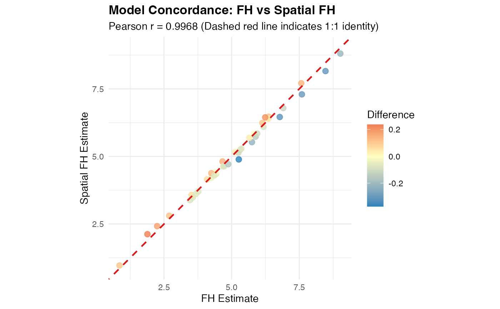
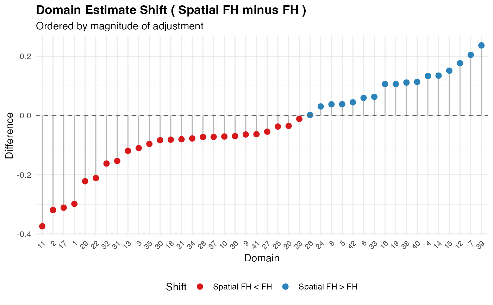

Provides a comprehensive evaluation and concordance comparison between two fitted Small Area Estimation (SAE) models (e.g. comparing Classical Fay-Herriot vs Spatial Fay-Herriot, Area-level vs Unit-level BHF, or EBLUP vs EBP).
Computes empirical agreement and efficiency metrics including:
Pearson linear correlation (\(r\)) and Spearman rank correlation (\(\rho\)).
Mean Absolute Difference (MAE) and Root Mean Squared Difference (RMSD).
Relative efficiency metrics: Mean MSE ratio (\(\text{MSE}_1 / \text{MSE}_2\)), and the proportion of domains where Model 2 achieves greater precision.
Average Relative Standard Error (RSE %) across models and precision gains.
Usage
compare_sae(model1, model2 = NULL, names = NULL, thresholds = c(20, 30), ...)
# Default S3 method
compare_sae(model1, model2 = NULL, names = NULL, thresholds = c(20, 30), ...)
# S3 method for class 'fastsae_comparison'
print(x, ...)
# S3 method for class 'fastsae_comparison'
summary(object, ...)
# S3 method for class 'fastsae_comparison'
plot(x, y = NULL, ...)
# S3 method for class 'fastsae_comparison'
autoplot(
object,
type = c("scatter", "comparison", "difference", "mse", "rse"),
title = NULL,
...
)Arguments
- model1
A fitted
fastsaemodel object, or a list containing twofastsaemodels.- model2
A second fitted
fastsaemodel object. Ignored ifmodel1is a list.- names
Optional character vector of length 2 specifying descriptive labels for the models. Default is inferred from model types or call arguments.
- thresholds
Numeric vector of length 2 defining the RSE (%) thresholds for reliability. Default is
c(20, 30).- ...
Additional arguments.
- x
An object of class
fastsae_comparison(forprintandplotmethods).- object
An object of class
fastsae_comparison(forsummaryandautoplotmethods).- y
Ignored argument for compatibility with the generic
plotmethod.- type
Character string indicating comparison plot type:
"scatter","comparison","difference","mse", or"rse". Default is"scatter".- title
Optional character string specifying a custom plot title.
Value
An S3 object of class fastsae_comparison containing:
metrics: A data frame of overall concordance and efficiency statistics.data: A domain-level data frame with aligned estimates, MSE, and RSE values.names: Vector of the two model names.thresholds: The RSE thresholds used.
See also
autoplot.fastsae_comparison, map_sae
Examples
library(fastsae)
data(mys)
# Fit two models
fit_fh <- eblup_fh(y ~ x1 + x2, vardir = "vardir", data = mys)
#>
#> ── Fast Small Area Estimation (fastsae) ────────────────────────────────────────
#> Call:
#> eblup_fh(formula = y ~ x1 + x2, vardir = "vardir", data = mys)
#>
#> ✔ Convergence: Yes (in 7 iterations)
#> Model: Fay-Herriot (Area-level)
#> Method: eblup
#> Random effect variance (sigma2_u): 2.569182
#>
#> Fixed Effects Coefficients:
#> beta std.error zvalue pvalue
#> (Intercept) 3.0689476 0.7631917 4.0212018 0.0001
#> x1 -0.0041073 0.0090768 -0.4525074 0.6509
#> x2 0.0861173 0.0309576 2.7817847 0.0054
#>
#> EBLUP Estimates (First 6 domains):
#> domain y eblup vardir random_effect mse rse
#> 1 1 8.359527 7.594807 0.6618838 2.96835204 0.5602338 9.855256
#> 2 2 7.599650 6.777056 0.8374691 2.52354833 0.6766501 12.137828
#> 3 3 5.514137 5.247512 0.8822257 0.77645304 0.7048881 15.999508
#> 4 4 3.869326 4.247072 0.6581716 -1.47453645 0.5556741 17.551750
#> 5 5 6.305063 6.353632 1.2788021 -0.09757891 0.9308379 15.185005
#> 6 6 3.926807 4.090117 0.3878004 -1.08192989 0.3497100 14.458337
#> ... and 36 more rows.
#>
fit_sfh <- eblup_sfh(y ~ x1 + x2, vardir = "vardir", data = mys, W = mys_proxmat)
#>
#> ── Fast Small Area Estimation (fastsae) ────────────────────────────────────────
#> Call:
#> eblup_sfh(formula = y ~ x1 + x2, vardir = "vardir", data = mys, W =
#> mys_proxmat)
#>
#> ✔ Convergence: Yes (in 9 iterations)
#> Model: Spatial Fay-Herriot (Area-level SAR)
#> Method: REML
#> Random effect variance (sigma2_u): 1.549863
#> Spatial autocorrelation (rho): -1
#>
#> Fixed Effects Coefficients:
#> beta std.error zvalue pvalue
#> (Intercept) 2.9932651 0.6301191 4.7503165 0.0000
#> x1 -0.0034577 0.0076744 -0.4505488 0.6523
#> x2 0.0857195 0.0265852 3.2243267 0.0013
#>
#> EBLUP Estimates (First 6 domains):
#> domain y vardir eblup random_effect mse rse
#> 1 1 8.359527 0.6618838 7.296421 2.67464429 0.4891177 9.585103
#> 2 2 7.599650 0.8374691 6.457796 2.22931568 0.6254776 12.246771
#> 3 3 5.514137 0.8822257 5.137339 0.71249266 0.5524796 14.468380
#> 4 4 3.869326 0.6581716 4.380358 -1.30881051 0.4835545 15.874976
#> 5 5 6.305063 1.2788021 6.391648 -0.05717641 0.7505664 13.554444
#> 6 6 3.926807 0.3878004 4.149499 -0.99769101 0.3355884 13.960720
#> ... and 36 more rows.
#>
# Compare models
comp <- compare_sae(fit_fh, fit_sfh, names = c("FH", "Spatial FH"))
print(comp)
#>
#> ── Small Area Estimation Model Concordance & Comparison ────────────────────────
#> Model 1: FH
#> Model 2: Spatial FH
#> Matched Domains: 42
#> ────────────────────────────────────────────────────────────────────────────────
#>
#> Key Concordance & Efficiency Metrics:
#> Metric Value
#> Matched Domains 42
#> Pearson Correlation (r) 0.9968
#> Spearman Correlation (rho) 0.9955
#> Mean Absolute Difference (MAE) 0.1191
#> Root Mean Squared Difference (RMSD) 0.1477
#> Mean MSE Ratio (FH / Spatial FH) 1.3376
#> Median MSE Ratio (FH / Spatial FH) 1.2854
#> Domains where Spatial FH has lower MSE 42 / 42
#> Percentage of domains where Spatial FH is more efficient (%) 100.0%
#> Mean RSE % (FH) 25.59%
#> Mean RSE % (Spatial FH) 21.76%
#> Average RSE Reduction (%) 3.83%
#>
summary(comp)
#>
#> ── Small Area Estimation Model Concordance & Comparison ────────────────────────
#> Model 1: FH
#> Model 2: Spatial FH
#> Matched Domains: 42
#> ────────────────────────────────────────────────────────────────────────────────
#>
#> Key Concordance & Efficiency Metrics:
#> Metric Value
#> Matched Domains 42
#> Pearson Correlation (r) 0.9968
#> Spearman Correlation (rho) 0.9955
#> Mean Absolute Difference (MAE) 0.1191
#> Root Mean Squared Difference (RMSD) 0.1477
#> Mean MSE Ratio (FH / Spatial FH) 1.3376
#> Median MSE Ratio (FH / Spatial FH) 1.2854
#> Domains where Spatial FH has lower MSE 42 / 42
#> Percentage of domains where Spatial FH is more efficient (%) 100.0%
#> Mean RSE % (FH) 25.59%
#> Mean RSE % (Spatial FH) 21.76%
#> Average RSE Reduction (%) 3.83%
#>
#> Distribution of Domain Point Estimates:
#> FH Spatial FH Difference
#> 0% 0.8555 0.9668 -0.3743
#> 25% 4.2455 4.2211 -0.0930
#> 50% 5.1879 5.0131 -0.0589
#> 75% 6.1655 6.2041 0.0621
#> 100% 9.0169 8.8055 0.2368
#>
#> Distribution of Relative Standard Error (RSE %):
#> FH Spatial FH RSE Diff (1 - 2)
#> 0% 9.86 9.59 -0.11
#> 25% 14.83 13.47 1.43
#> 50% 21.85 19.83 2.50
#> 75% 34.76 27.57 5.96
#> 100% 52.75 45.65 9.71
#>
# Plot comparison
autoplot(comp, type = "scatter")

autoplot(comp, type = "difference")
